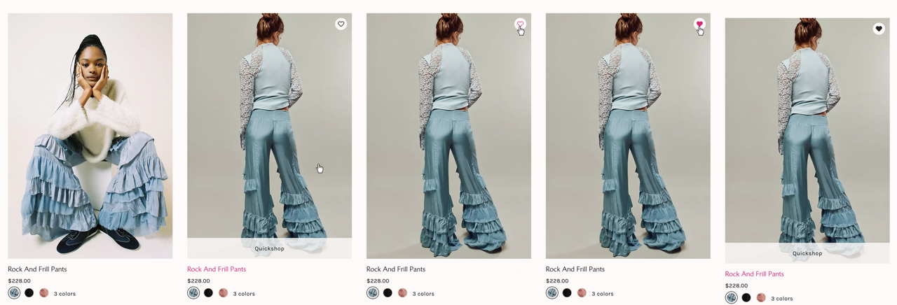
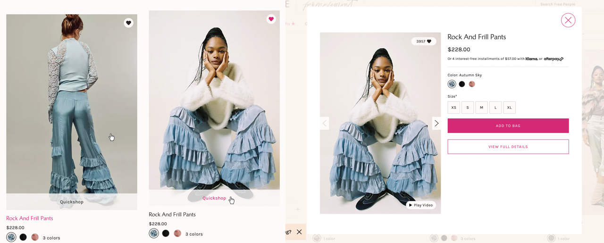

Beta
- Link to Free People product page
Triggers
hover over/off
- User hovers over or off the over the product image.
- User hovers over or off the heart button.
- User hovers over or off the "Quickshop" button.
click
- User clicks on "Quickshop" button.
- User clicks on the close button.
- User off of the "Quickshop" modal.
- User clicks on the heart button.
Rules
hover over
- The cursor changes from a pointer to a hand pointer when hovering over.
- The image fades from a more model centric photo to a photo that highlights the product.
- The Product Name color changes from dark grey to pink.
- A banner appears on the bottom of the product image giving the user the option to "Quickshop."
- Another small button, a circle with a heart outline, also appears where a user can add an item to their wishlist.
- The heart in the heart button changes (slowly fades) from a grey color to a pink color.
- "Qickshop" changes (slowly fades) from a grey color to a pink color.
hover off
- The cursor changes from a a hand pointer to a pointer when hovering off.
- The image fades from a a photo that highlights the product to a more model centric photo.
- The Product Name color changes from pink to dark grey
- A "Quickshop" banner disappears from the bottom of the product image.
- Another small button, a circle with a heart outline, also disappears when hovering off
- The heart in the heart button changes (slowly fades) from a pink color to a grey color.
- "Qickshop" changes (slowly fades) from a pink color to a grey color.
Quickshop
click on
- A product modal opens (expands out from middle) displaying additional product information not seen on the product card.
- Page behind modal is blurred/has a tan overlay
click off
- When clicking the x or off the modal, the product modal closes, returning to origional product page
Favorites
click on
- The heart fills to solid pink
- Quickshop button disapears
click off
- After a user hovers or clicks off the product card after clicking the heart, the heart button stays over the product card and the heart is filled black
Feedback
hover over
- The cursor changes from a pointer to a hand pointer when hovering over.
- The image fades from a more model centric photo to a photo that highlights the product.
- The Product Name color changes from dark grey to pink
- A banner appears on the bottom of the product image giving the user the option to "Quickshop."
- Another small button, a circle with a heart outline, also appears where a user can add an item to their wishlist.
- The heart in the heart button changes (slowly fades) from a grey color to a pink color.
- "Qickshop" changes (slowly fades) from a grey color to a pink color.
hover off
- The cursor changes from a a hand pointer to a pointer when hovering off.
- The fades changes from a a photo that highlights the product to a more model centric photo.
- The Product Name color changes from pink to dark grey
- A "Quickshop" banner disappears from the bottom of the product image.
- Another small button, a circle with a heart outline, also disappears when hovering off
- The heart in the heart button changes (slowly fades) from a pink color to a grey color.
- "Qickshop" changes (slowly fades) from a pink color to a grey color.
Quickshop
click on
- A product modal opens (expands out from middle) displaying additional product information not seen on the product card.
- Page behind modal is blurred/has a tan overlay
click off
- When clicking the x or off the modal, the product modal closes, returning to origional product page
Favorites
click on
- The heart fills to solid pink
- Quickshop button disapears
click off
- After a user hovers or clicks off the product card after clicking the heart, the heart button stays over the product card and the heart is filled black
Loops & Modes
- No loops
Modes
- New buttons, "Quickshop" and the heart button appear after a user hovers over a product image.
click (quickshop)
- When modal opens, new buttons, "add to cart" and "view full details" appear, along with the product image,
title, price, sizing options, and color options depending on product.
click (favorites)
- Product is added to a favorites list on the "favorites" page
Add to Favotites

Quickshop
